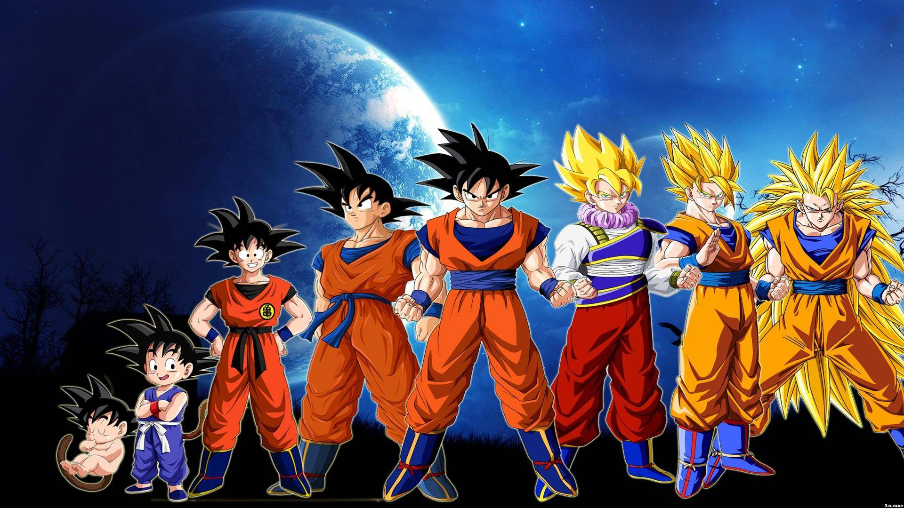

NOTÍCIAS NOVEMBRO 27, 2023
NOTÍCIAS NOVEMBRO 27, 2023
Shangri-La Frontier – Anime ganha trailer e visual para novo arco
O site oficial da adaptação em anime de Shangri-La Frontier liberou um novo trailer para a obra. O vídeo apresenta...
NOTÍCIAS NOVEMBRO 20, 2023
Welcome To Demon School Iruma-kun - Anime ganha 4 temporada
estreia em abril de 2024. Para aqueles que querem acompanhar o Welcome to Demon School original!
NOTÍCIAS NOVEMBRO 28, 2023
Hoshi Furu – Romance sobre garota fingindo ser princesa morta tem anuncio de anime
Através da capa da próxima edição da revista Be Love, foi anunciado que o mangá de Hoshi Furu Oukoku no...
NOTÍCIAS NOVEMBRO 28, 2023
Dandadan – Mangá ação bem elogiado da JUMP tem anuncio de anime com trailer
Confirmando os rumores, foi anunciado que o mangá de Dandadan terá uma adaptação em anime.
NOTÍCIAS NOVEMBRO 27, 2023
Dark Gatherin – Anime de terror bem elogiado tera 24 episódio
Confirmando anime Dark Gathering tera 24 episódio no estúdio OLM.
NOTÍCIAS NOVEMBRO 29, 2023
Sengoku Youko – Anime de ação sobrenatural ganha trailer da história com OP e ED e data
O site oficial da adaptação em anime de Sengoku Youko liberou um novo trailer para a obra.
NOTÍCIAS NOVEMBRO 29, 2023
Hokkaido Gals – Comédia romântica entre garoto e Gal ganha trailer com OP e data de estreia
O site oficial da adaptação em anime de Dosanko Gal wa Namara Menkoi (Hokkaido Gals Are Super Adorable!)
NOTÍCIAS NOVEMBRO 26, 2023
Alice to Therese – Novo filme da autora de AnoHana chegará a Netflix em janeiro
A Netflix anunciou que o filme Alice to Therese no Maboroshi Koujou (Alice and Therese’s Illusory Factory)
NOTÍCIAS NOVEMBRO 26, 2023
Blue Lock – Filme spin-off ganha novo trailer e data de estreia
O site oficial da adaptação em anime de BLUELOCK liberou o 1º trailer para a obra.

NOTÍCIAS NOVEMBRO 23, 2023
Crunchyroll anuncia lançamento de 13 filmes de Dragon Ball Z dublados
A Crunchyroll anunciou a adição de novos filmes dublados, sendo 13 da franquia de Dragon Ball Z
NOTÍCIAS NOVEMBRO 22, 2023
Banished From The Heroes’ Party – 2º temporada ganha novo visual
O site oficial da adaptação em anime de Shin no Nakama liberou um novo visual para a obra.
NOTÍCIAS NOVEMBRO 19, 2023
Kimi to Boku no Saigo – 2º temporada ganha novo visual
O site oficial da adaptação em anime de Kimi to Boku liberou um novo visual para a 2º temporada da obra.
 NOTÍCIAS NOVEMBRO 18, 2023
NOTÍCIAS NOVEMBRO 18, 2023
One Piece Manga ganha título de manga mais vendido
Vem conseguindo manter a média de venda em seus volumes anteriores
NOTÍCIAS NOVEMBRO 18, 2023
My Hero Academia ganha título de segundo manga mais vendido do mundo!
As vendas dos seus produtos anteriores garantiram mais uma semana de boost.
NOTÍCIAS NOVEMBRO 18, 2023
Tensei shitara Slime Datta Ken Vol. 21
Ganhando primeiro lugar de Light Novels mais vendido com 96,374 vendas totais
 NOTÍCIAS NOVEMBRO 18, 2023
NOTÍCIAS NOVEMBRO 18, 2023
Yotsugogurashi Vol. 16
Ganhando segundo lugar de Light Novels mais vendido com 10,550 vendas totais
NOTÍCIAS NOVEMBRO 28, 2023
Jujutsu Kaisen - anime mais esperado por todos
Ganhando primeiro lugar com sua enorme fan base e animação com diretor
NOTÍCIAS NOVEMBRO 28, 2023
Shangri-La Frontier – Anime ganha notas incríveis
Ganhando melhores notas pela sua animação e história bem desenvolvida, superando várias expectativas